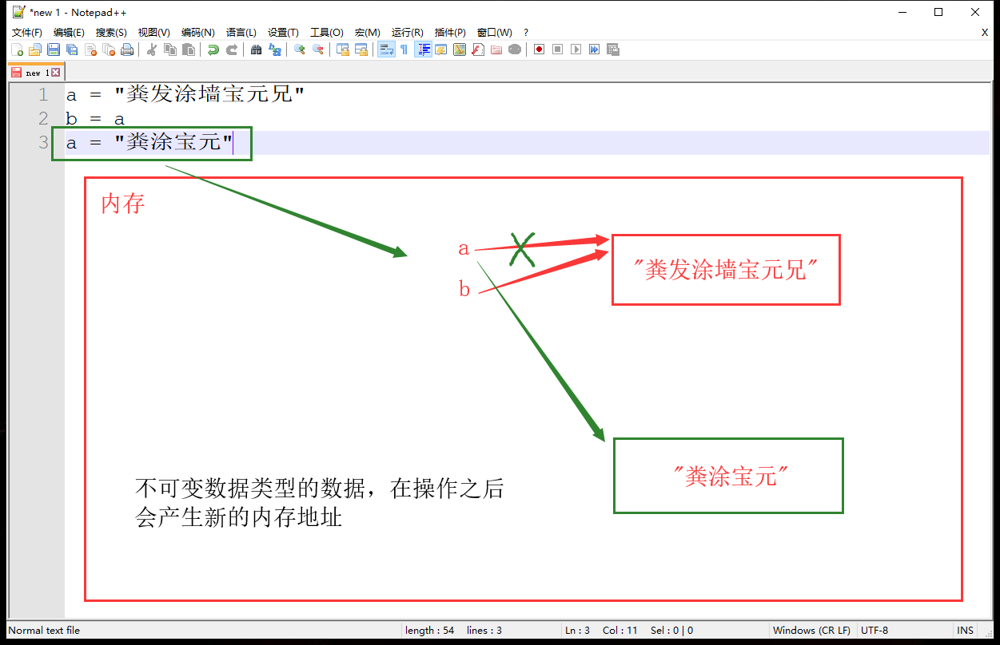
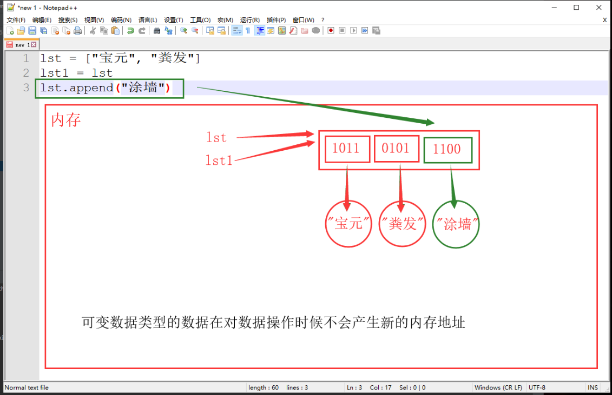
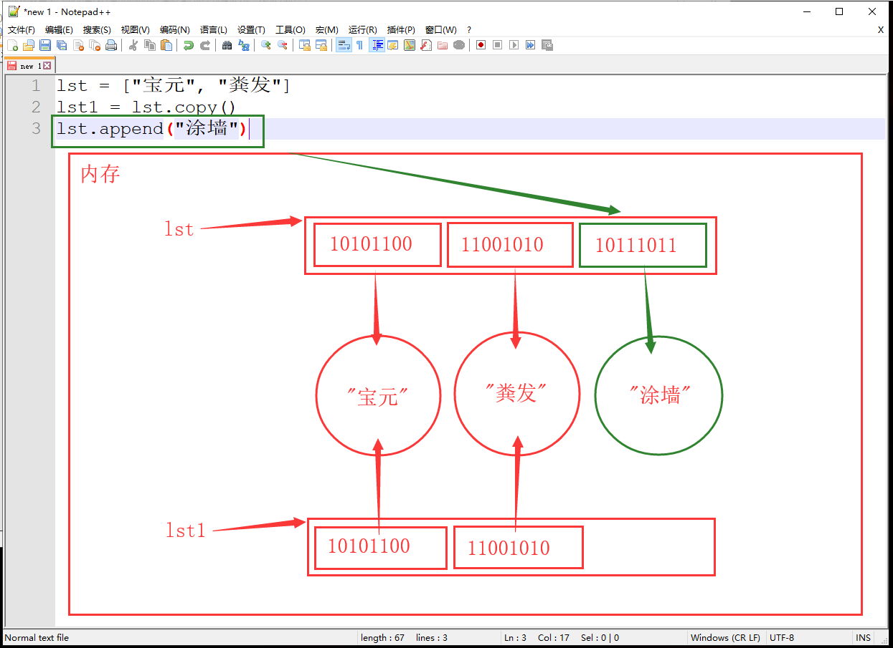
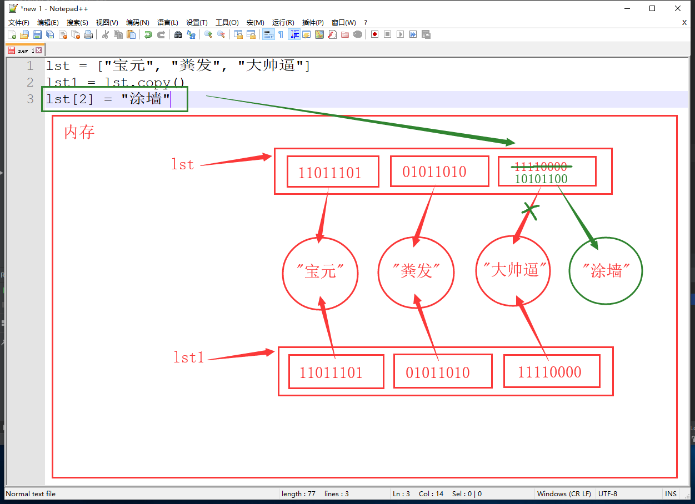
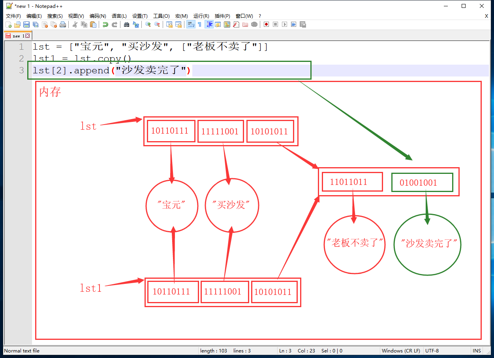
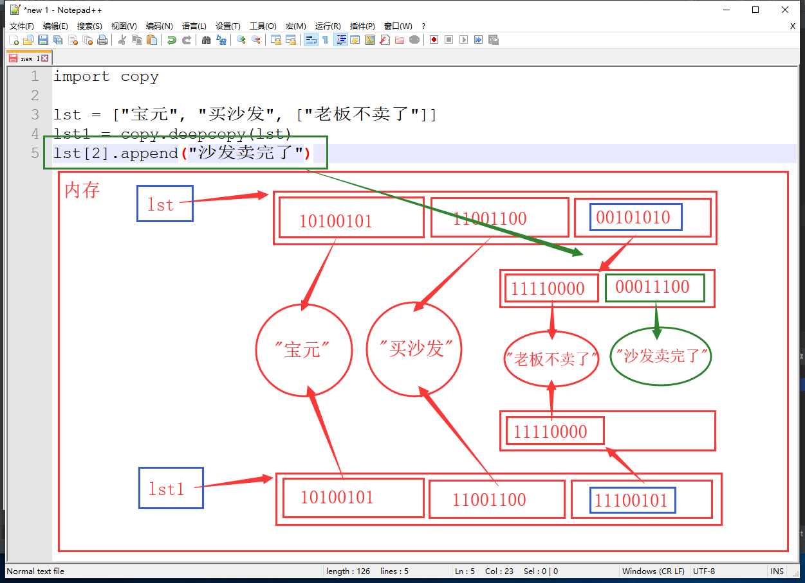
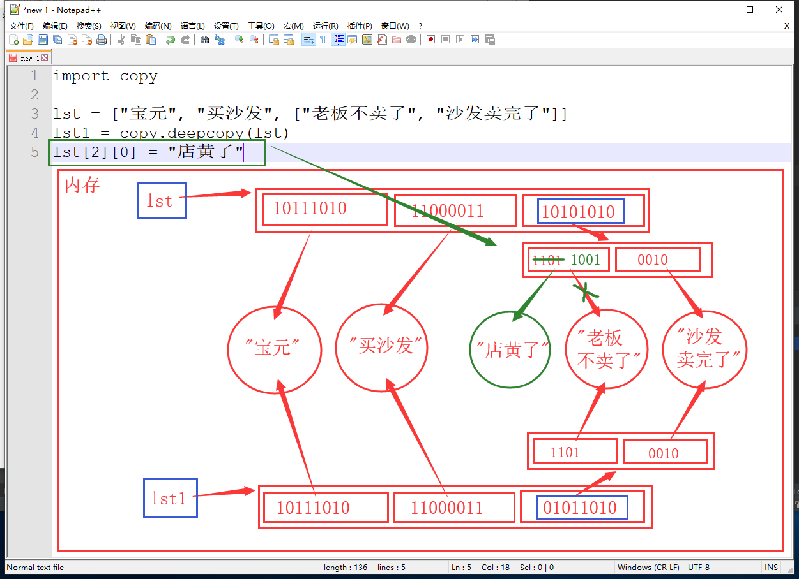

== ：判断两边的内容是否相同
a = -6
b = -6
print(a == b) # Trueis ：判断两边的内存地址是否相同
a = -6
b = -6
print(a is b) # Fales指定任意字符串，屡行驻留机制，重复定义都指向一个内存空间，即内存地址相同
from sys import intern # intern：拘禁、软禁
a = intern("hello!@" * 20)
b = intern("hello!@" * 20)
print(a is b) # True不可变类型数据（如字符串），在对数据进行操作的时候都会开辟一个新的内存空间储存操作后的数据，两个数据的内存地址是不相同的
a = "粪发涂墙宝元兄"
b = a
a = "粪涂宝元"
print(a is b) # False
print(a) # 粪涂宝元
print(b) # 粪发涂墙宝元兄
可变类型数据（如列表），在对数据进行操作的时候在原有列表进行修改，不会产生新的列表，所以一旦将列表赋值给另一个变量，一个列表变化另一个列表也随之变化
lst = ["宝元", "粪发"]
lst1 = lst
lst.append("涂墙")
print(lst is lst1) # True
print(lst) # ['宝元', '粪发', '涂墙']
print(lst1) # ['宝元', '粪发', '涂墙']
总结：
浅拷贝方法：
lst1 = lst.copy()lst = ["宝元", "粪发"]
lst1 = lst.copy()
lst.append("涂墙")
print(lst) # ['宝元', '粪发', '涂墙']
print(lst1) # ['宝元', '粪发']lst = ["宝元", "粪发"]
lst1 = lst[:]
lst.append("涂墙")
print(lst) # ['宝元', '粪发', '涂墙']
print(lst1) # ['宝元', '粪发']浅拷贝之后，对数据修改时内存的变化


总结：
现在解决了可变类型数据（如列表）多个变量指向同一空间的问题，但是如果列表中再嵌套一个可变类型数据，情况又不一样了
lst = ["宝元", "买沙发", ["老板不卖了"]]
lst1 = lst.copy()
lst[2].append("沙发卖完了")
print(lst) # ['宝元', '买沙发', ['老板不卖了', '沙发卖完了']]
print(lst1) # ['宝元', '买沙发', ['老板不卖了', '沙发卖完了']]
由于浅拷贝只复制了外层列表中的数据的内存地址，导致原列表和copy列表都指向了内层列表的内存空间，当内层列表中添加数据时，两个列表都会发生变化，此时就要引出深拷贝
深拷贝方法
import copy
lst = ["宝元", "买沙发", ["老板不卖了"]]
lst1 = copy.deepcopy(lst)
lst[2].append("沙发卖完了")
print(lst) # ['宝元', '买沙发', ['老板不卖了', '沙发卖完了']]
print(lst1) # ['宝元', '买沙发', ['老板不卖了']]
深拷贝，对内层数据修改后的内存变化


总结：
set()| set.add() | 增加元素 |
|---|---|
| set.update() | 迭代增加 |
set.add()
st = {"粪", "涂"}
st.add("宝元")
print(st) # {'粪', '涂', '宝元'}
set.update()
st = {"粪", "涂"}
st.update("粪涂宝元")
print(st) # {'宝', '粪', '涂', '元'}
| set.pop() | 随机删除 |
|---|---|
| set.remove() | 指定元素删除 |
| set.clear() | 清空集合 |
set.pop()
st = {"粪", "涂", "宝元"}
det = st.pop()
print(det) # 涂
print(st) # {'宝元', '粪'}
set.remove()
st = {"粪", "涂", "宝元"}
st.remove("涂")
print(st) # {'宝元', '粪'}
set.clear()
st = {"粪", "涂", "宝元"}
st.clear()
print(st) # set()
先删除后添加
st = {"粪", "涂", "宝元"}
st.remove("宝元")
st.add("老郭")
print(st) # {"粪", "涂", "老郭"}
转换数据类型进行修改
st = {"粪", "涂", "宝元"}
lst = list(st)
index = lst.index("宝元") # 利用查看列表元素索引
lst[index] = "老郭" # 准确更改元素
st = set(lst) # 转回集合
print(st) # {'老郭', '涂', '粪'}
利用for循环查看集合元素
st = {"粪", "涂", "宝元"}
for el in st:
print(el, end=" ") # 粪 涂 宝元
| set1 | set2 | 并集 |
|---|---|
| set1 & set2 | 交集 |
| set1 - set2 | 差集 |
| set1 ^ set2 | 补集 |
| set1 < set2 | 子集 |
| set1 > set2 | 超集 |
set1 | set2
set1 = {"DNF", "LOL"}
set2 = {"DNF", "WOW"}
print(set1 | set2) # {'DNF', 'LOL', 'WOW'}
set1 & set2
set1 = {"DNF", "LOL"}
set2 = {"DNF", "WOW"}
print(set1 & set2) # {'DNF'}
set1 - set2
set1 = {"DNF", "LOL"}
set2 = {"DNF", "WOW"}
print(set1 - set2) # {'LOL'}
print(set2 - set1) # {'WOW'}
set1 ^ set2
set1 = {"DNF", "LOL"}
set2 = {"DNF", "WOW"}
print(set1 ^ set2) # {'LOL', 'WOW'}
set1 < set2
set1 = {"DNF"}
set2 = {"DNF", "WOW"}
print(set1 < set2) # True
print(set1 > set2) # False
set1 > set2
set1 = {"DNF", "LOL"}
set2 = {"DNF"}
print(set1 < set2) # False
print(set1 > set2) # True